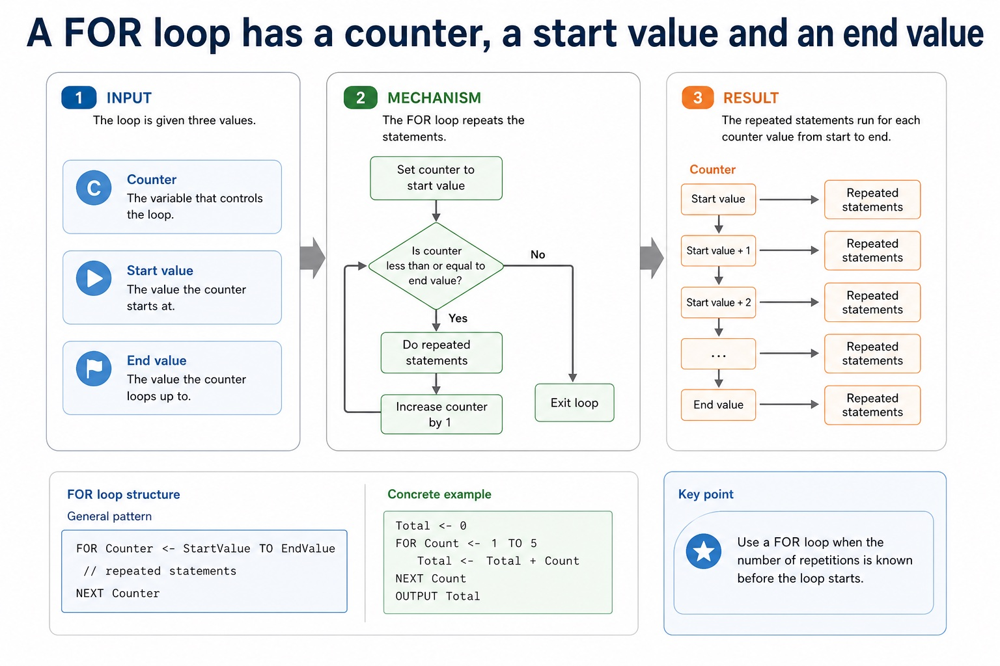
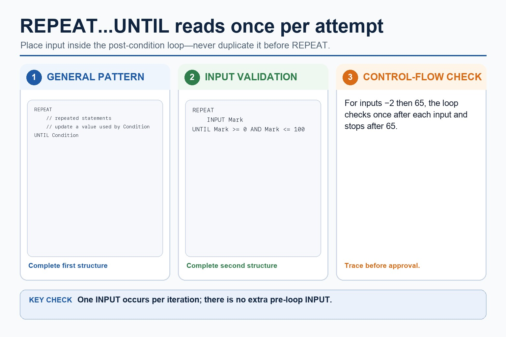
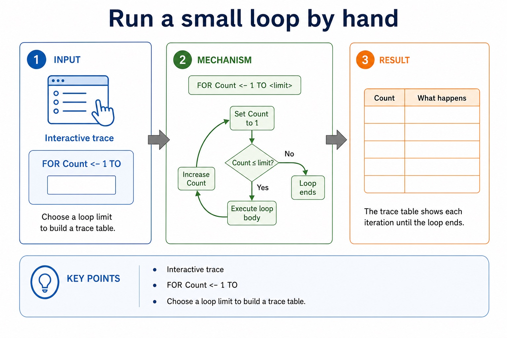
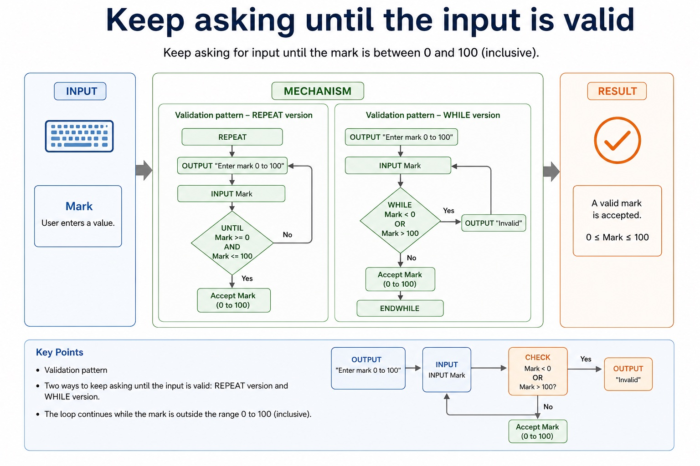
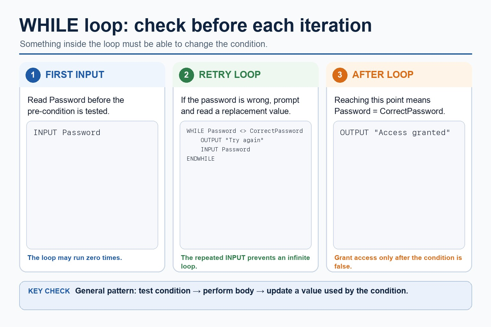

Cambridge AS9618 | Paper 2 | Section 11: Programming
Selecting and justifying a loop structure
Flexible-depth lesson
S11.05 | Learn from the diagrams, test the method, then choose the practice you need.
Choose a Quick, Full or Deep route
Quick route
Use the diagnostic, learning objectives, first worked example and foundation question. Stop once the learner can explain the central distinction accurately.
Full route
Use every knowledge-point material set, the worked method, the terminology check and all questions.
Deep route
Add the prerequisite refresher, ask learners to connect the concept checklist, discuss the labelled extension and complete a transfer question without a model answer.
Part 1 | optional depth
Prerequisite knowledge and quick diagnostic
Recall S11.04 before starting this lesson.
Give one accurate definition or method step before continuing. If it is missing, revisit only that prerequisite.
Open optional prerequisite refresher
Use IF statements, including the ELSE clause and nested IF statements; CASE statements; count-controlled loops; post-condition loops; and pre-condition loops.
Part 2 | knowledge-point material sets
Learn each point through visuals
Follow the map, the three-part explanation and the concrete cue. Open precise wording only after the idea is clear.
Open the concept checklist and choose what to teach
loop
structure
justify
01
S11.05 · decision
Loop · Structure · Justify
Concept map
loopstructurejustify
See how it works
EvidenceJustify why one loop structure may be better suited to a problem than another
ChoiceSelect and justify the loop structure from the problem
Reasonit is well suited when the count or bounds are known, but a pre-condition or post-condition loop is better when the number of repetitions depends on…
S11.05 diagrams
1 / 3
01
Concrete example · 1 of 3
A FOR loop has a counter, a start value and an end value

Open text transcript
FOR loop structure
General pattern
FOR Counter <- StartValue TO EndValue
// repeated statements
NEXT Counter
Concrete example
Total <- 0
FOR Count <- 1 TO 5
02
Diagram · 2 of 3
Post-condition loop: run once, then check

Open text transcript
A REPEAT...UNTIL loop checks its condition after executing the body.
Place INPUT Mark once inside REPEAT so each attempt obtains one value.
Do not add a duplicate INPUT before the loop.
Stop when Mark is between 0 and 100 inclusive.
03
Comparison · 3 of 3
Run a small loop by hand

Open text transcript
Interactive trace
FOR Count <- 1 TO
Choose a loop limit to build a trace table.
Open precise syllabus wording
Select and justify a suitable loop structure.
Justify why one loop structure may be better suited to a problem than another.
Supporting diagram library
1 / 6
01
Diagram · 1 of 6
Use CASE for clear values of one expression
Open text transcript
CASE compares one expression with several discrete values.
Each listed value has its own action and OTHERWISE handles unlisted values.
Close the complete multi-way selection with ENDCASE.
02
Diagram · 2 of 6
The difference is when the condition is tested
Open text transcript
WHILE vs REPEAT
REPEAT...UNTIL
Condition checked
before the loop body
after the loop body
Minimum iterations
Continues when
condition is TRUE
03
Diagram · 3 of 6
Java syntax is support, not Cambridge pseudocode
Open text transcript
Java support only
Cambridge-style pseudocode
WHILE Mark < 0 OR Mark 100
INPUT Mark
ENDWHILE
Java support example only
while (mark < 0 || mark 100) {
mark = scanner.nextInt();
04
Diagram · 4 of 6
A special value can stop the loop
Open text transcript
Initialise Total and input the first Number before WHILE.
While Number is not -1, add Number to Total and input the next Number.
The repeated input changes the condition and allows the loop to terminate.
The sentinel -1 stops the loop and is not included in Total.
05
Diagram · 5 of 6
Keep asking until the input is valid

Open text transcript
Validation pattern
REPEAT version
OUTPUT "Enter mark 0 to 100"
INPUT Mark
UNTIL Mark = 0 AND Mark <= 100
WHILE version
WHILE Mark < 0 OR Mark 100
OUTPUT "Invalid"
06
Diagram · 6 of 6
Pre-condition loop: check before running

Open text transcript
A WHILE loop checks its condition before each iteration and may run zero times.
Input Password before testing whether it differs from CorrectPassword.
Inside the loop, output the retry message and input a replacement Password.
Output Access granted only after the WHILE condition becomes false.
Apply the idea
Worked method
01Nested IF and CASE
02Total a fixed array
03Choose the loop from the stopping rule
04For a grade, an outer IF tests Mark = 80; its ELSE contains an inner IF testing Mark = 50; each IF closes with ENDIF.
05For a menu, CASE Choice OF maps 1, 2 and 3 to actions and OTHERWISE handles every unlisted value before ENDCASE.
06For Marks[1:30], set Total <- 0, use FOR Index <- 1 TO 30, add Marks[Index] to Total, close with NEXT Index and output Total after all thirty elements have been processed.
Open precise terminology and exam facts
Justify why one loop structure may be better suited to a problem than another.
A count-controlled loop uses FOR...TO...NEXT when the repetition count or inclusive counter range is known before the loop starts. The counter, start value and end value define the iterations; NEXT closes the loop.
Match the loop bounds to the declared data. Initialise accumulators before the loop, update them inside it and output a final result after the loop unless intermediate output is explicitly required.
Justify FOR from the problem: it is well suited when the count or bounds are known, but a pre-condition or post-condition loop is better when the number of repetitions depends on input or a stopping condition.
A WHILE...ENDWHILE loop is a pre-condition loop: it tests before the body and may run zero times. A REPEAT...UNTIL loop is a post-condition loop: it executes the body before testing and therefore runs at least once. A FOR...NEXT loop is count-controlled.
Select and justify the loop structure from the problem: use FOR when the count is known, WHILE when execution may be unnecessary and continuation is tested first, and REPEAT when the body must run once before a stopping condition can be tested. The justification must use the scenario, not only say that one loop is easier.
Beyond syllabus / 延伸知识（不要求背诵）
consistent style, modularity and automated tests reduce maintenance errors in larger programs.
Part 3 | select by learner need
Practice by question type
applyrecallfoundation2 marks
Question 1. What handles an unlisted CASE value?
Show answer and marking guidance
Answer: OTHERWISE, followed by ENDCASE for the complete structure.
Marking guidance: Award one mark for each distinct, technically accurate point or method step.
Common error: For the command word apply, perform that exact action; do not replace it with an unrelated fact.
explainexplainapplication2 marks
Question 2. Why is FOR suitable for Marks[1:30]?
Show answer and marking guidance
Answer: The 30 iterations and valid index bounds are known before the loop starts.
Marking guidance: Award one mark for each distinct, technically accurate point or method step.
Common error: Do not repeat the same point in different words; each mark needs a separate idea or method step.
writerecalltransfer8 marks
Question 3. Write Cambridge pseudocode that inputs Age and Member, outputs Adult member when Age is at least 18 and Member is TRUE, Adult non-member for other adults, and Child otherwise. Then state why nested IF is appropriate. Write Cambridge pseudocode to input and total exactly 12 monthly values, then output the total. Explain why the selected loop is count-controlled. Suggest and justify FOR, WHILE or REPEAT...UNTIL for (a) processing 50 array elements, (b) reading while a file is not at EOF, and (c) requesting a password at least once until correct.
Show answer and marking guidance
Answer: inputs/uses both Age and Member; outer IF tests Age = 18; inner IF tests Member only on the adult path; three outputs are attached to the correct branches; closes both IF statements coherently; justifies nested selection because the membership decision depends on the age decision; initialises Total before repetition; uses FOR Month <- 1 TO 12 or an equivalent twelve-iteration range; inputs a value and adds it inside the loop; closes with NEXT and outputs Total after the loop; justifies FOR because the repetition count is known in advance; FOR for 50 known elements; justifies fixed count/bounds; WHILE for the pre-tested EOF condition and possible empty file; REPEAT...UNTIL for password input that must occur once; distinguishes pre-condition, post-condition and count-controlled structures
Marking guidance: Do not use CASE for overlapping ranges without a complete mapping or close two IF statements with only one ENDIF. Do not use an eleven- or thirteen-iteration bound or reset the accumulator inside the loop. Do not select a loop only by its spelling or claim that WHILE always executes once.
Common error: Do not copy the worked example unchanged; transfer the method and check it against the new context.
Related past-paper indexes
Reference
Marks
Command word
Question type
9618/22/W/23 Q2(b)
2
draw
diagram
Index only: Cambridge question and mark-scheme wording is not reproduced on this public course page.
Part 4 | close when ready
Summary and exam reminders
Summary
Define selecting and justifying a loop structure with the exact technical vocabulary expected by the syllabus.
Use the lesson method on a fresh context and show the intermediate decision, representation or calculation.
Match the shape of the answer to the command word and the available marks.
Check the final answer against the scenario instead of repeating a memorised sentence.
Common error to correct
Students often think working Java automatically means good pseudocode. Correction: Paper 2 rewards clear Cambridge-style algorithm expression.
Exam technique
Follow the command word: state gives a fact; explain links a cause to a consequence; compare covers both sides.
Match the number of independent points or method steps to the available marks.
For selecting and justifying a loop structure, use the exact technical term before applying it to the scenario.